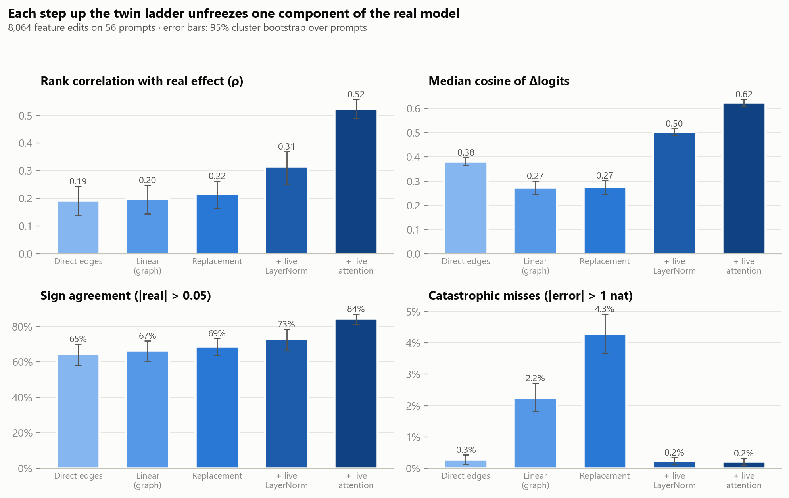
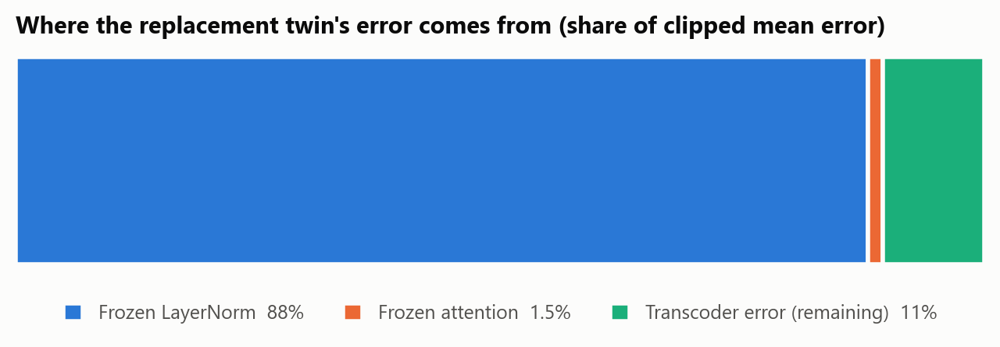
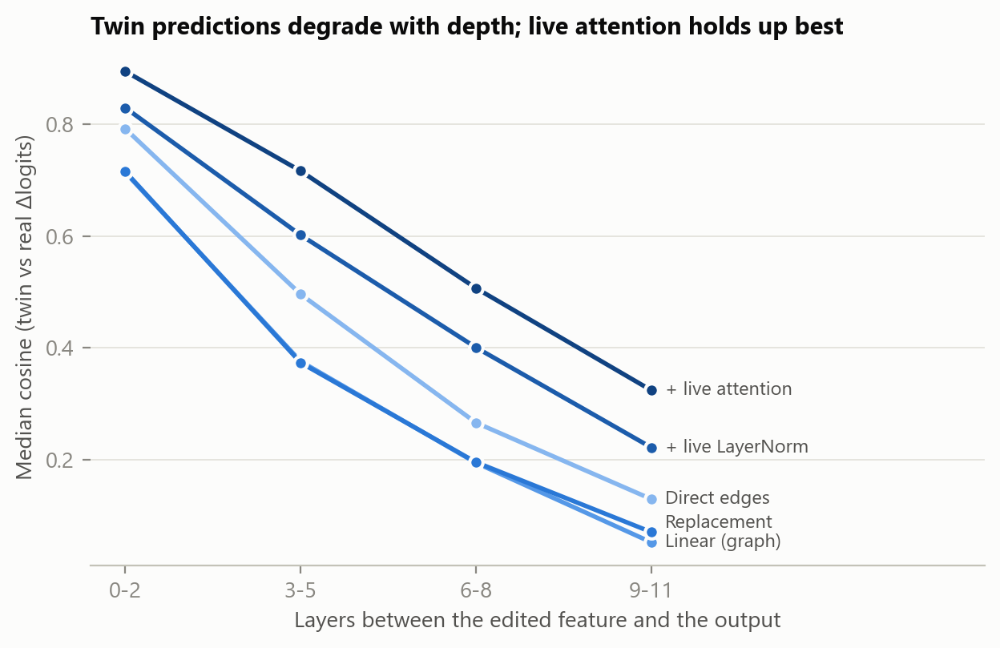
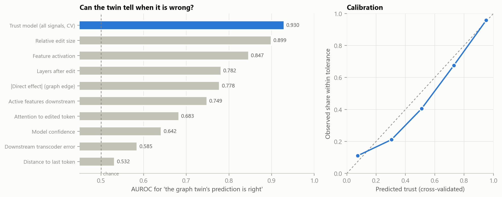
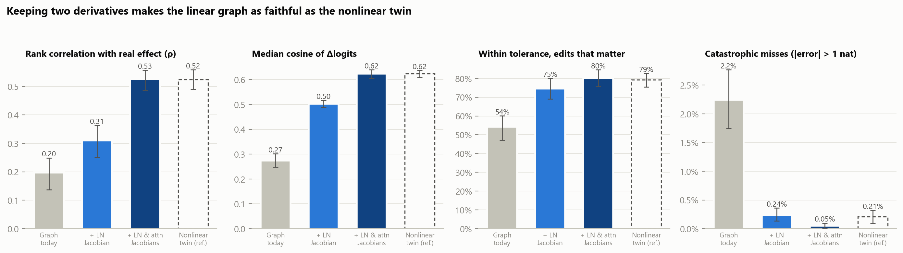
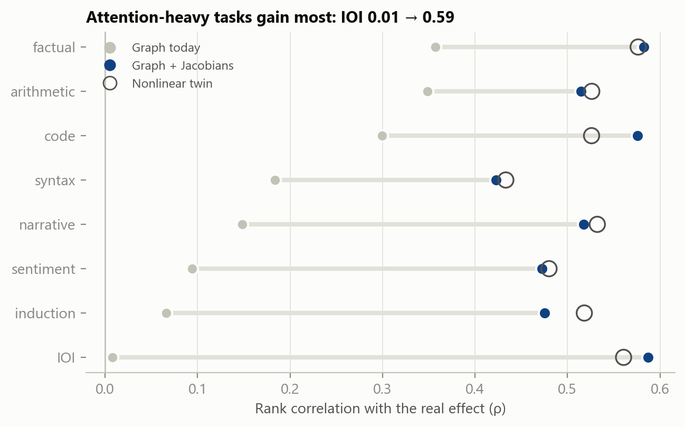
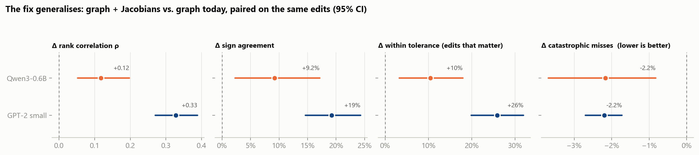

Technical report, TwinLens project, October 2026; version 1.2, November 2026. Code, data and figures: https://github.com/SpiliosDimakopoulos/twinlens
Attribution graphs explain a language model's computation through an interpretable replacement model: MLPs are swapped for sparse transcoders, while attention patterns and LayerNorm scales are frozen at the clean run. Their edges are read as causal claims: "turn this feature off and the output moves by this much". We test those claims directly. On GPT-2 small with per-layer transcoders, we make 8,064 feature interventions (ablate or amplify ×2) across 56 prompts in 8 task families. We predict each intervention's effect with a ladder of twins, each unfreezing one more component of the real model, and then measure it on the real model.
Five findings:
The fix keeps the graph linear. Freezing a scale or a pattern drops its first-order derivative. Restoring both terms (the LayerNorm-scale Jacobian and the softmax-pattern Jacobian) still gives an exactly linear twin, so effects stay additive over sources. That linear twin matches the fully nonlinear replacement model on every metric:
The fix replicates on a second, architecturally different model, Qwen3-0.6B (§4.7): the paired improvement in ρ is +0.12 [0.05, 0.20] and catastrophic misses fall from 3.0% to 0.8%. The gain is smaller than on GPT-2, on 16 prompts, with every paired interval excluding zero (uncorrected for multiple metrics). It replicates again on Gemma-2-2B with Gemma Scope transcoders (§4.9): 17,472 edits on all 26 layers, ρ 0.21 → 0.36, paired Δρ +0.15 [0.12, 0.18]. 4. Failures of today's graph can be anticipated without running the real model. A logistic "trust model" over nine signals computed from the clean run alone predicts whether the graph prediction will hold: AUROC 0.93 on held-out prompts and on held-out task families over all edits, and 0.84 on the edits with a noticeable effect, where the task is not trivial (95% interval 0.80–0.87). Simpler signals do about as well or better: the size of the graph's own prediction (0.87 on noticeable edits), or its disagreement with the fixed graph (0.94). Among the top attribution edges with a noticeable effect, the graph is right 54% of the time overall, 71% on the edges the trust model clears, and 22% on those it flags.
The fixed graph beats a gradient through the real model. Attribution patching, one backward pass through GPT-2 itself with nothing frozen, reaches ρ = 0.38 and 77% sign agreement on the same edits. Fix B is better on both: Δρ +0.15 [0.11, 0.19] and +9 pp [4, 14] in sign agreement, with the same error size (§4.8). On Gemma-2-2B the margin is smaller but still excludes zero: Δρ +0.05 [0.03, 0.08], +8 pp [4, 11] in sign agreement (§4.9).
Effects in this study are small: only 9.0% of edits move the output by more than 0.05 nats and 96 edits by more than 0.2 nats. The rank and sign results are the robust ones; the within-tolerance and mean-error numbers should be read against the "no change" baseline (§3).
The repository includes a dashboard and a command-line audit (twinlens audit) that show, for
any feature, the effect predicted at each twin level, the real effect, and the trust score.
Mechanistic interpretability increasingly explains model behaviour through replacement models: sparse autoencoders, transcoders and cross-layer transcoders, assembled into attribution graphs (Dunefsky et al., 2024; Ameisen et al., 2025; Lindsey et al., 2025). Such a graph is a digital twin of the model's computation on one prompt. Like an industrial digital twin, it is useful only if its simulations agree with the real system under intervention. Ameisen et al. validate graphs with perturbation experiments, note that the replacement model's agreement with the real model degrades with depth after an intervention, and suspect the frozen normalisation denominators as a cause of magnitude errors; they also state that frozen attention patterns leave QK circuits out of the graph. For gradient attribution on the real model, Kramár et al. (2024) show that a saturated attention softmax makes first-order estimates fail. We measure, edit by edit, four things these works leave open for transcoder graphs: when the graph's predictions fail, how much of the failure each frozen component causes, whether adding back the missing first-order terms removes it, and whether a failure can be spotted without running the real model. We are not aware of earlier work that measures them together. The last question matters in practice. A user reading a graph cannot re-run every edge as an experiment.
Model. GPT-2 small (124M parameters, 12 layers, 12 heads, d_model = 768). It runs on our own
~250-line PyTorch implementation (twinlens/core/gpt2.py), which exposes TransformerLens-style
hook points and reads weights through memory-mapped safetensors. The whole system (model, 12
transcoders, activation caches) fits in 0.82 GB of private memory on a laptop CPU. Logits match
Hugging Face GPT2LMHeadModel to 7×10⁻⁵ (max abs).
Twin features. We use the per-layer MLP transcoders for GPT-2 small of Dunefsky, Chlenski &
Nanda (2024): 24,576 ReLU features per layer. Each reads LayerNormPre(resid_mid) and predicts
mlp_out. We verified this convention empirically: at layer 8 it gives L0 ≈ 66 and FVU 0.41,
while the alternatives give FVU > 1. On an 87-token paragraph, splicing a transcoder in place of
its MLP recovers 63–94% of the loss gap to mean-ablating that MLP (layers 2, 5, 8, 11).
Validating the instrument. Before making any new measurement, the implementation is checked
against published circuit results. Each check is pinned as a test
(tests/test_reproduction.py):
Fix a prompt and its clean run. A feature edit sets transcoder feature f at layer l and position p from its clean activation a to a′: 0 to ablate, 2a to amplify. We compare the change it causes in the log-probability of the clean top-1 token, Δlog p, under five twin levels, two fixes and the real model:
| level | downstream features | LayerNorm scales | attention patterns |
|---|---|---|---|
| 1 Direct edges | held at clean values | frozen | frozen |
| 2 Linear (graph) | ReLU gates frozen (linear) | frozen | frozen |
| 3 Replacement | recomputed (ReLU) | frozen | frozen |
| 4 + live LayerNorm | recomputed | live | frozen |
| 5 + live attention | recomputed | live | live |
| Fix A: graph + LN Jacobian | ReLU gates frozen (linear) | frozen + first-order term | frozen |
| Fix B: graph + LN & attention Jacobians | ReLU gates frozen (linear) | frozen + first-order term | frozen + first-order term |
| Real GPT-2 | real MLPs | live | live |
In every twin level, each MLP is replaced by its transcoder plus that layer's clean-run error
term (mlp_out − transcoder(mlp_in)), held fixed. So at zero perturbation every level
reproduces the clean logits exactly; this is tested for every level. In the real model, an edit
moves the feature's decoder direction, mlp_out[p] += (a′ − a)·W_dec[f], and everything
downstream is recomputed.
Level 2 is the attribution graph itself, run as a model: a change at any feature spreads through the graph's edges and nothing else, so its output is a linear (affine) function of the edit, which is tested. In the rest of the report "the graph twin", "today's graph" and "level 2" all mean this level. Level 1 keeps only the edited feature's direct path. Its prediction equals the gradient × activation attribution, and our tests check this equality to 1%. Because levels 3–5 each unfreeze one component, the gaps between consecutive levels attribute the twin's error to its sources.
Edits. For each prompt and each layer we take two groups of features:
Each feature is both ablated and amplified. BOS is excluded. The 56 prompts span 8 families:
factual recall, IOI, induction/copying, syntax, code, sequences (named arithmetic in the
data), narrative and sentiment
(experiments/prompts.json). That gives 8,064 edits, each predicted by five twin levels and two fixes and measured on the real model.
Metrics.
Intervals are 95% cluster bootstraps over prompts (1,000 resamples). The tables in §4.1 and §4.5 come from separate bootstrap runs, so the intervals of a shared row can differ in the second decimal.
Most edits barely matter. The median |real Δlog p| is 0.0024, and only 9.0% of edits (729) move it by more than 0.05. Aggregate tolerance rates are therefore inflated by easy cases. We also report every headline number on this subset of edits with a noticeable effect, called "big edits" below. Almost all of it (718 of 729) comes from the top-attribution group. Even this subset is mostly small effects: its mean |real Δlog p| is 0.13, 96 edits exceed 0.2 nats and 21 exceed 0.5.
The "no change" baseline. Because effects are small, a predictor that always answers "nothing happens" is a strong reference for the threshold and error metrics. It is within tolerance on 97.7% of all edits and 74.8% of big edits, with a clipped mean error of 0.018. It carries no rank or sign information, so ρ and sign agreement are the metrics that discriminate between twins; the within-tolerance and mean-error columns should be read against this baseline.

| level | ρ (all) | ρ (big) | median cos | sign agree (big) | within tol (big) | catastrophic |
|---|---|---|---|---|---|---|
| 1 Direct edges | 0.19 [0.14, 0.24] | 0.27 [0.12, 0.39] | 0.38 [0.37, 0.40] | 64.6% [58.1, 70.2] | 73.1% [67.5, 78.3] | 0.3% [0.1, 0.4] |
| 2 Linear (graph) | 0.20 [0.15, 0.25] | 0.24 [0.09, 0.37] | 0.27 [0.25, 0.30] | 66.5% [60.5, 71.9] | 54.2% [47.4, 60.5] | 2.2% [1.8, 2.7] |
| 3 Replacement | 0.22 [0.16, 0.26] | 0.28 [0.16, 0.41] | 0.27 [0.25, 0.30] | 68.7% [63.6, 73.3] | 55.1% [49.1, 60.9] | 4.3% [3.7, 4.9] |
| 4 + live LayerNorm | 0.31 [0.25, 0.37] | 0.41 [0.26, 0.53] | 0.50 [0.49, 0.52] | 73.1% [66.8, 78.3] | 73.7% [67.8, 78.7] | 0.2% [0.1, 0.3] |
| 5 + live attention | 0.52 [0.49, 0.56] | 0.64 [0.56, 0.71] | 0.62 [0.61, 0.64] | 84.4% [81.2, 87.1] | 79.3% [75.7, 82.5] | 0.2% [0.1, 0.3] |
The graph twin is a weak counterfactual predictor, and it fails in the cases that matter most. For the 50% of edits taken from the top attribution edges, catastrophic misses rise to 4.2% at level 2, against 0.3% for random features. The edges a user is most likely to act on are the ones most likely to be badly wrong. On big edits the graph twin's within-tolerance rate (54%) is below the "no change" baseline (75%), and its clipped mean error (0.113) is six times that baseline's (0.018).
Catastrophic misses are an early-layer phenomenon. Of the 181 catastrophic misses at level 2, 137 are edits in layer 0 (20% of all layer-0 edits) and 174 are in layers 0–2; 127 are ablations and 54 amplifications. Excluding layer 0 entirely, the graph twin still has ρ = 0.23 and 72% sign agreement on big edits, so the weak ranking is not a layer-0 artefact, but its catastrophic rate falls to 0.6%.
Reading a single edge beats propagating through the frozen linear twin. The direct-edge prediction has higher median cosine (0.38 vs 0.27), a higher within-tolerance rate on big edits (73% vs 54%), and almost no catastrophic misses (0.3% vs 2.2%). With LayerNorm frozen, a change that travels through later layers is never scaled back down, so it grows instead. Adding the indirect paths therefore makes the prediction worse.

Measured by clipped mean error (errors capped at 5 nats), frozen LayerNorm accounts for 88% of the replacement twin's error. Frozen attention accounts for 1.5%, and the transcoders (their reconstruction error, held fixed) for the remaining 11%. Two caveats. The shares depend on the clip, because the frozen-scale errors are heavy-tailed: the LayerNorm share is 70% with a 1-nat clip, 79% at 2 nats and 96% at 20 nats. And the decomposition follows one unfreezing order (LayerNorm, then attention); we did not run the reverse order, so the split between the two is not unique.
Single cases show the mechanism. An edited layer-0 feature whose decoder contribution is 50–90% of the residual-stream norm pushes the frozen-scale twin far outside the transcoders' training distribution. Downstream features then grow layer after layer, and in extreme cases the predicted change in log-probability exceeds 10⁷ nats. The real model, with live LayerNorm, renormalises the perturbation away.
Frozen attention adds little to the mean error but a lot to the ranking error: its errors are many and moderate rather than few and huge. Making attention live lifts ρ from 0.31 to 0.52 and sign agreement from 73% to 84%. The per-family breakdown agrees. At level 2, ρ is 0.01 on IOI and 0.07 on induction (both attention-mediated circuits) but 0.36 on factual recall. At level 5 all families sit between 0.43 and 0.58.

The median cosine between predicted and real Δlogits falls with the number of layers between the edit and the output, at every level. The decline matches the per-layer compounding Ameisen et al. describe. For the graph twin it goes from 0.71 (0–2 layers) to 0.05 (9–11 layers). For the live-attention twin it goes from 0.89 to 0.32.

The trust model predicts within tolerance for the graph twin from nine signals of the clean run, with no access to the real model's response. Under 5-fold cross-validation grouped by prompt:
The standardised coefficients are interpretable. Trust falls with edit size (−0.53), activation (−0.66), the number of layers to the output (−0.53), the number of active downstream features (−0.33), and attention from the output position to the edited token (−0.30). It rises with model confidence (+0.56).

LayerNorm. LayerNorm divides the centred residual stream u by its scale σ(u). Today's graph keeps σ at its clean value σ₀, so a change du passes through as da = du/σ₀. But σ itself changes when u changes. Taking that into account to first order gives
dn = da − n₀ (n₀ · da) / d,
where n₀ is the clean normalised output and d = 768 is the width of the residual stream. The
second term removes the part of the change that only rescales the vector, which LayerNorm
would undo. Today's graph keeps only da.
Attention. Today's graph keeps each attention pattern p at its clean value p₀. But a change in the queries and keys (dq, dk) changes the scores by ds = (dq · k₀ + q₀ · dk) / √d_head, and the softmax turns that into
dp = p₀ ⊙ (ds − Σₖ p₀ ds).
The head output z = p·v then becomes z = p₀v₀ + p₀·dv + dp·v₀. We drop the product of the two changes (dp·dv), which is second-order.
Adding both terms keeps the model linear: Fix B is affine in the perturbation (tested), and it
is the exact first-order expansion of the twin with frozen ReLU gates but live LayerNorm and
attention. On a 1% edit it agrees with that twin to within 5%, while the frozen versions do not
(tests/test_twin.py). In practice it is the attribution graph obtained by not detaching the
LayerNorm scales and attention scores during backpropagation.
| twin | ρ (all) | ρ (big) | median cos | sign agree (big) | within tol (big) | catastrophic | mean err |
|---|---|---|---|---|---|---|---|
| Graph today (frozen LN + attention) | 0.20 [0.14, 0.25] | 0.24 [0.07, 0.36] | 0.27 [0.25, 0.30] | 66.5% [59.6, 71.7] | 54.2% [47.1, 60.1] | 2.2% [1.7, 2.8] | 0.113 |
| Fix A: + LN Jacobian | 0.31 [0.25, 0.36] | 0.41 [0.28, 0.53] | 0.50 [0.49, 0.52] | 73.0% [67.4, 78.2] | 74.6% [69.0, 80.1] | 0.2% [0.1, 0.4] | 0.024 |
| Fix B: + LN & attention Jacobians | 0.53 [0.49, 0.56] | 0.66 [0.59, 0.72] | 0.62 [0.61, 0.64] | 85.7% [82.1, 88.8] | 80.1% [75.6, 84.6] | 0.0% [0.0, 0.1] | 0.019 |
| Nonlinear twin (live LN + attention) | 0.52 [0.49, 0.56] | 0.64 [0.56, 0.71] | 0.62 [0.61, 0.64] | 84.4% [81.6, 87.1] | 79.3% [75.5, 82.8] | 0.2% [0.1, 0.3] | 0.022 |

The gains are largest exactly where today's graphs fail: IOI ρ goes from 0.01 to 0.59 and induction from 0.07 to 0.48. These are the attention-mediated circuits, where freezing attention patterns removes the mechanism itself.
Payoff. Consider the edges a user would actually inspect: the top attribution edges, on edits with a noticeable effect (n = 718).
The 0.7 cut-off was fixed by hand, not tuned on held-out data; at 0.5 the kept edges are right 68% of the time and at 0.9, 91% (keeping 31%). Keeping instead the same share of edges with the smallest graph prediction gives 77%, so the simple baseline of §4.4 is at least as good a filter. Either way, failures can be screened without running an extra intervention, but a cleared edge is still wrong about a quarter of the time.
We replicated Fix B (graph + LayerNorm and attention Jacobians, level linear_fulljac) on a
second, architecturally different model: Qwen3-0.6B, which uses RMSNorm instead of LayerNorm,
grouped-query attention, RoPE, QK-norm and SwiGLU. We used its public circuit-tracer
transcoders (163,840 features per layer, mwhanna/qwen3-0.6b-transcoders-lowl0). The scope is
smaller than for GPT-2: 2,304 feature edits on 16 prompts (2 per task family), with edits in
layers 10-27 of 28 (the upper two thirds). Qwen3 has no BOS token, and its first token is an
attention sink on which transcoders fire thousands of features; we leave that position to the
error term, so the first word of a prompt is never edited. The levels compared are direct edges, graph today
(linear), Fix A (adding the normalisation Jacobian, here RMSNorm including QK-norm), Fix B, and
the real model. The nonlinear replacement twins were not run on Qwen3, because a full
164k-feature encode per simulation is too slow on CPU.
The Jacobians are verified by tests on Qwen3 as well (tests/test_qwen.py, not run in CI
because they need ~7 GB of transcoders): the levels used here reproduce the clean run under a
no-op edit, the linear levels are exactly affine, and Fix B agrees with the
live-norm/live-attention twin to within 5% on a 1% edit.
| Level | ρ [95% CI] | sign agree | within tol (big) | catastrophic | mean err |
|---|---|---|---|---|---|
| Graph today | 0.33 [0.23, 0.43] | 78.5% | 51.5% | 3.0% | 0.138 |
| Fix A | 0.42 [0.33, 0.50] | 85.6% | 58.6% | 1.4% | 0.083 |
| Fix B | 0.45 [0.36, 0.53] | 87.7% | 62.0% | 0.8% | 0.070 |
On induction prompts ρ rises from 0.04 to 0.28.

Paired improvement of Fix B over graph today (same edits, 95% cluster bootstrap over prompts):
All intervals exclude zero, with no correction for the four metrics and only 16 prompt clusters on Qwen3. The gain points the same way on every metric, but it is smaller than on GPT-2. One possible reason is that this transcoder family has a larger reconstruction error, which no Jacobian can repair; we have not tested this.
Fix B also does less against the "no change" baseline here. On big edits (n = 326) it is within tolerance 62% of the time, against 59% for "no change", and its clipped mean error (0.070) is twice that baseline's (0.035). On Qwen3 the fix improves the ranking and the sign of predicted effects, but their size is still often wrong. We also cannot say whether the linear fix matches the nonlinear twin on Qwen3, because that twin was not run. The gain is also not uniform across task families: it is largest on induction, syntax, sentiment and IOI, and roughly flat on code and narrative.
Attribution patching estimates an edit's effect with one gradient through the real model:
Δlog p ≈ ∂log p/∂mlp_out[l, p] · (a′ − a) W_dec[f] (Syed et al., 2024; Kramár et al., 2024).
LayerNorm and attention are differentiated, not frozen, and the MLPs are the real ones, so it
has every derivative Fix B restores and more. We computed it for all 8,064 edits
(experiments/atp_baseline.py, experiments/analyze_atp.py):
| predictor | ρ [95% CI] | sign agree (big) | within tol (big) | catastrophic | mean err |
|---|---|---|---|---|---|
| Graph today | 0.20 [0.14, 0.25] | 66.5% | 54.2% | 2.2% | 0.113 |
| Attribution patching (real GPT-2) | 0.38 [0.34, 0.42] | 76.5% | 77.0% | 0.1% | 0.019 |
| Fix B | 0.53 [0.49, 0.56] | 85.7% | 80.1% | 0.0% | 0.019 |
Paired on the same edits, Fix B − attribution patching is Δρ +0.15 [0.11, 0.19] and +9 pp [4, 14] in sign agreement; within tolerance (+3 pp [−2, 8]), catastrophic misses and mean error are indistinguishable. A gradient through the real model avoids the frozen graph's large errors, but it ranks and signs effects worse than the linear twin with the two Jacobians. One reading is that the twin's first-order expansion is taken through sparse transcoder features with fixed ReLU gates, which behave more linearly under a feature-sized edit than the real GELU MLPs do; we have not tested this explanation.
We ported the twin to Gemma-2-2B (twinlens/core/gemma2.py, DECISIONS.md D4) with the Gemma
Scope 16k-feature JumpReLU transcoders and circuit-tracer's per-layer L0 choice. Gemma adds
four RMSNorms per block, alternating sliding-window attention, an attention-score softcap
(50 tanh(s/50), whose derivative Fix B includes) and a final logit softcap. Which activations
the transcoders read and write was settled on real weights before the sweep: the
pre-feedforward norm output without its weight, and the MLP output after the post-feedforward
norm. That choice has the lowest reconstruction error (mean FVU 0.45 over layers 2, 8, 14 and
20) and L0 close to the published values. Single-layer splice recovery is uneven, though: 1.00
at layer 8, 0.34–0.45 at layers 14 and 20, and −0.50 at layer 2. So the Gemma replacement is
weaker than GPT-2's.
The scope is the full model: 17,472 edits on 56 prompts (the GPT-2 prompt set). In each of the
26 layers, 3 top and 3 random active features are each ablated and amplified (12 edits per layer
per prompt). BOS is never edited. Unlike
on Qwen3, the nonlinear replacement twin was run, and so was attribution patching on the real
model (experiments/atp_baseline.py --model gemma2).
| Level | ρ [95% CI] | sign agree | within tol (big) | catastrophic | mean err |
|---|---|---|---|---|---|
| Direct edges | 0.22 [0.19, 0.26] | 75.0% | 83.4% | 0.02% | 0.012 |
| Graph today | 0.21 [0.17, 0.24] | 77.3% | 78.5% | 0.02% | 0.019 |
| Fix A | 0.29 [0.25, 0.32] | 83.2% | 85.2% | 0.01% | 0.012 |
| Fix B | 0.36 [0.33, 0.39] | 87.4% | 89.6% | 0.01% | 0.011 |
| Nonlinear replacement twin | 0.23 [0.20, 0.25] | 82.1% | 79.5% | 0.02% | 0.033 |
| Attribution patching (real Gemma) | 0.31 [0.27, 0.34] | 79.9% | 85.2% | 0.01% | 0.011 |
Paired, Fix B − graph today is Δρ +0.15 [0.12, 0.18], +10 pp [7, 14] in sign agreement and +11 pp [8, 14] within tolerance on big edits. Fix B − attribution patching is Δρ +0.05 [0.03, 0.08], +8 pp [4, 11] in sign agreement and +4 pp [1, 8] within tolerance; catastrophic misses and mean error are indistinguishable. The gain holds in every task family: ρ rises on all eight, most on IOI (0.12 → 0.34), syntax (0.19 → 0.38) and narrative (0.28 → 0.45), least on code (0.31 → 0.38).
Three caveats. First, catastrophic misses are almost absent on Gemma at every level (at most 4 of 17,472 edits), so that metric does not separate the levels here. Second, on big edits (n = 809) "no change" is within tolerance 80% of the time with mean error 0.011, so Fix B beats that baseline on tolerance (90%) but not on error size. Third, unlike on GPT-2, the nonlinear replacement twin is much worse than Fix B (ρ 0.23 against 0.36, mean error three times larger). A plausible reason is the weak splice recovery above: running the transcoders live at every downstream layer compounds their reconstruction error, while the linear twin only uses them through gates and Jacobians at the clean point. We have not tested this.
circuit-tracer transcoders, where we covered only the upper 18 layers and
far fewer edits (§4.7), and Gemma-2-2B with Gemma Scope transcoders whose splice recovery is
uneven across layers (§4.9). Models beyond 2B parameters and cross-layer transcoders, which
the current circuit-tracing work uses, remain untested.circuit-tracer library.make test # 33 tests, including the reproduction suite
make sweep # 8,064 edits, ~40 min on a laptop CPU (resumable)
python experiments/extend_sweep.py --modes linear_lnjac # Fix A, ~10 min
python experiments/extend_sweep.py --modes linear_fulljac # Fix B, ~15 min
python experiments/qwen_prepare.py # Qwen3 transcoders, ~6 GB, ~70 min
python experiments/fidelity_sweep.py --model qwen3 --per-family 2 --n-top 2 --n-random 2 # 2,304 edits, ~30 min
python experiments/gemma_prepare.py # Gemma-2-2B weights + Gemma Scope transcoders
python experiments/fidelity_sweep.py --model gemma2 --n-top 3 --n-random 3 # 17,472 edits, ~5 h on 8 vCPU, 16 GB RAM
python experiments/atp_baseline.py --model gemma2 # attribution patching on Gemma
make analyze # analyze.py + analyze_generalization.py: summary.json, trust_model.json, figures
make serve # dashboard at http://localhost:8000
The sweep's raw output (experiments/results/fidelity.parquet, 1.3 MB) is committed, so
make analyze reproduces every number above without re-running the sweep (the robustness
checks of §3–§4.9 are in the robustness and generalization blocks of summary.json). The
latency figures in the README come from make bench.